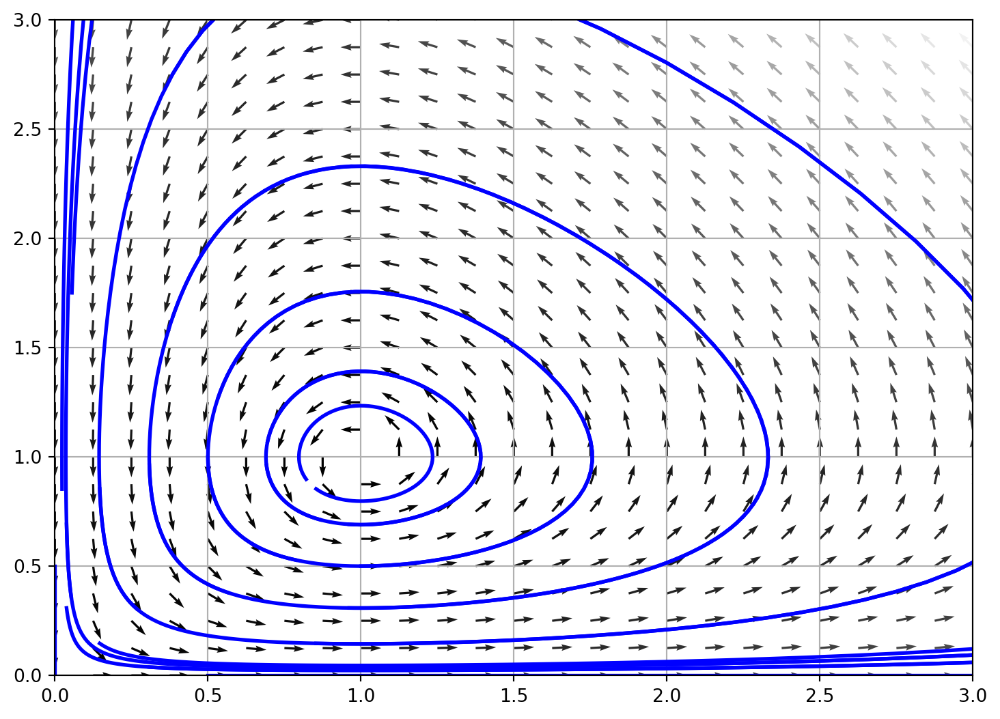

\(\displaystyle \left[ \left( 0, \ 0\right), \ \left( \frac{c}{d}, \ \frac{a}{b}\right)\right]\)
Sistemas no lineales
Ahora estudiaremos un sistema de ecuaciones diferenciales no lineales autonomos, que se puede escribir como:
\[\frac{dx}{dt} = F(x),\] donde \(F(x)\) es una función no lineal. Para esto usaremos el polinomio de Taylor de orden 2 de \(F(x)\) alrededor de \(x_0\), donde \(x_0\) es un punto de equilibrio del sistema. \[F(x) = F(x_0) + F'(x_0)(x-x_0) + \frac{1}{2}F''(x_0)(x-x_0)^2 + \cdots\] donde \(F'\) representa la matriz Jacobiana de \(F(x)\). Entonces el sistema se puede aproximar en el vecindario de \(x_0\) como: \[\frac{dx}{dt} = F'(x_0)(x-x_0),\] el sistema anterior es lineal en una vencidad de \(x_0\).
Ejemplo
Consideremos el modelo de depredación de Lotka-Volterra:
\[\frac{dx}{dt} = ax - bxy\] \[\frac{dy}{dt} = -cy + dxy\] donde \(a,b,c,d\) son constantes positivas y \(x,y\) son las poblaciones de presas y depredadores respectivamente.
Note que el sistema anterior es no lineal y el flujo es determinado por la función \(F(x,y)\): \[F(x,y) = \begin{pmatrix} ax - bxy \\ -cy + dxy \end{pmatrix}\] Para encontrar los puntos de equilibrio del sistema, debemos resolver el sistema de ecuaciones: \[\begin{cases} ax - bxy = 0 \\ -cy + dxy = 0 \end{cases}\] que tiene solución:
de esta forma tenemos que estudiar el comportamiento del sistema en los puntos de equilibrio, para ello cálculamos la matriz Jacobiana de \(F(x,y)\):
\(\displaystyle \left[\begin{matrix}a - b y & - b x\\d y & - c + d x\end{matrix}\right]\)
- Punto \((0,0)\)
de esta forma los autovectores y autovalores de la matriz \(J(0,0)\) son:
\(\displaystyle \left[ \left( a, \ 1, \ \left[ \left[\begin{matrix}1\\0\end{matrix}\right]\right]\right), \ \left( - c, \ 1, \ \left[ \left[\begin{matrix}0\\1\end{matrix}\right]\right]\right)\right]\)
por tanto los puntos de equilibrio \((0,0)\) es un punto de silla. Ahora estudiaremos el punto de equilibrio en el punto \((\frac{b}{d},\frac{a}{c})\):
\(\displaystyle \left[\begin{matrix}0 & - \frac{b c}{d}\\\frac{a d}{b} & 0\end{matrix}\right]\)
de esta forma los autovectores y autovalores de la matriz \(J\Big(\frac{b}{d},\frac{a}{c}\Big)\) son:
\(\displaystyle \left[ \left( - i \sqrt{a} \sqrt{c}, \ 1, \ \left[ \left[\begin{matrix}- \frac{i b \sqrt{c}}{\sqrt{a} d}\\1\end{matrix}\right]\right]\right), \ \left( i \sqrt{a} \sqrt{c}, \ 1, \ \left[ \left[\begin{matrix}\frac{i b \sqrt{c}}{\sqrt{a} d}\\1\end{matrix}\right]\right]\right)\right]\)
Note que en este punto los autovalores son complejos putos por ende tenemos un punto de equilibrio estable. Pero que su comportamiento es oscilatorio.
De esta forma tenemos que el diagrma de fases del sistema para \(a=1, b=1, c=1, d=1\) es:
